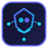

展示页定位
面向 BOSS 作品集和技术面试场景，突出系统流程、工程设计和个人实现职责，不替代论文，也不写成接口说明。

人工智能人岗匹配评估系统 项目作品展示围绕多智能体协同面试、大五人格建模与岗位匹配分析，构建从岗位建模、评估会话到可解释性报告生成的完整招聘评估流程。
展示页采用左侧说明、右侧录屏的结构，把论文中的设计思想和项目中的真实页面对应起来，便于面试官快速理解系统价值。
面向 BOSS 作品集和技术面试场景，突出系统流程、工程设计和个人实现职责，不替代论文，也不写成接口说明。
将录屏命名为 overview.mp4、job-model.mp4、session.mp4、interview.mp4、personality.mp4、report.mp4，并放入 docs/assets/showcase。
建议按“岗位建模、评估会话、多智能体面试、人格评分、匹配报告”的顺序讲，最后回到系统完整闭环。